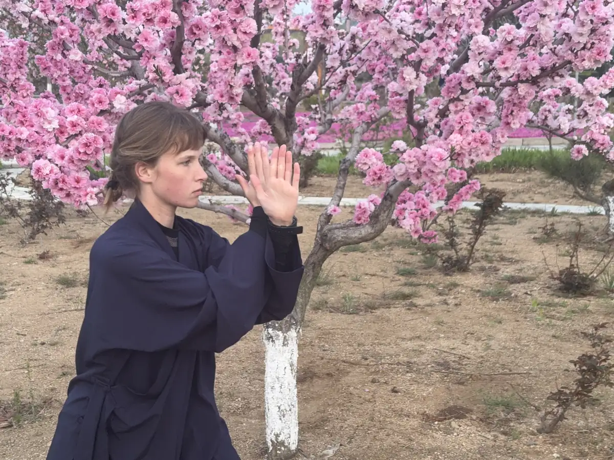

Tuition, visas, and practical planning
Training in China is a serious commitment, so students need clear practical information before they decide. This page explains the essentials around cost, visas, payment, and what to expect before arrival.

The first investment is in yourself
For many students, the biggest decision is not just financial. It is deciding to commit to a period of focused training, disciplined routine, and personal development in a very different environment.
Visa process
Getting a visa for China is usually straightforward. In most countries, students apply through the nearest Chinese Visa Application Service Center or Chinese consulate. The school provides the invitation letter, accommodation confirmation, and supporting documents needed for the application.
Visa support from the school
Depending on the length of stay, the school can advise students on whether to apply for an L, X, or F visa. If original documents are required, the school can send them by express mail. If a student has difficulty applying for an X or F visa, the school may advise applying for an L visa first and extending it after arrival.
Tuition approach
Training costs depend mainly on how long a student plans to stay. Students can either pay month by month or pay in one go for a longer stay, with stronger discounts for longer commitments.
Pricing per month
1 month — $700
2 months — $675/month
3 months — $650/month
4 months — $625/month
5 months — $600/month
6 months — $575/month
7 months — $550/month
8 months — $525/month
9 months — $500/month
10 months — $465/month
11 months — $430/month
12 months — $400/month.
Short stays and fees
If a stay is more than 3 days and less than a month, tuition is generally calculated as a month. If a stay is less than 3 days, the rate is typically calculated at $50 per day. There is also a one-time non-refundable application fee of $100 and an administration fee of $100.
Airport pickup
Pickup from Yantai airport is $100, while pickup from Weihai airport is free.
Easiest payment method
For many students, the easiest way to pay is once you arrive at the school using WeChat Pay, Alipay, or cash. Bank transfer is possible, but payment on arrival is often the simplest and most practical option.
Longer stays and work option
Students staying for six months or longer may also ask the school about help finding English teaching work in China alongside training. This should be discussed early because it creates a demanding weekly schedule.
This page sets out the practical essentials clearly: visa support, tuition structure, extra fees, airport pickup, and the easiest ways to pay.